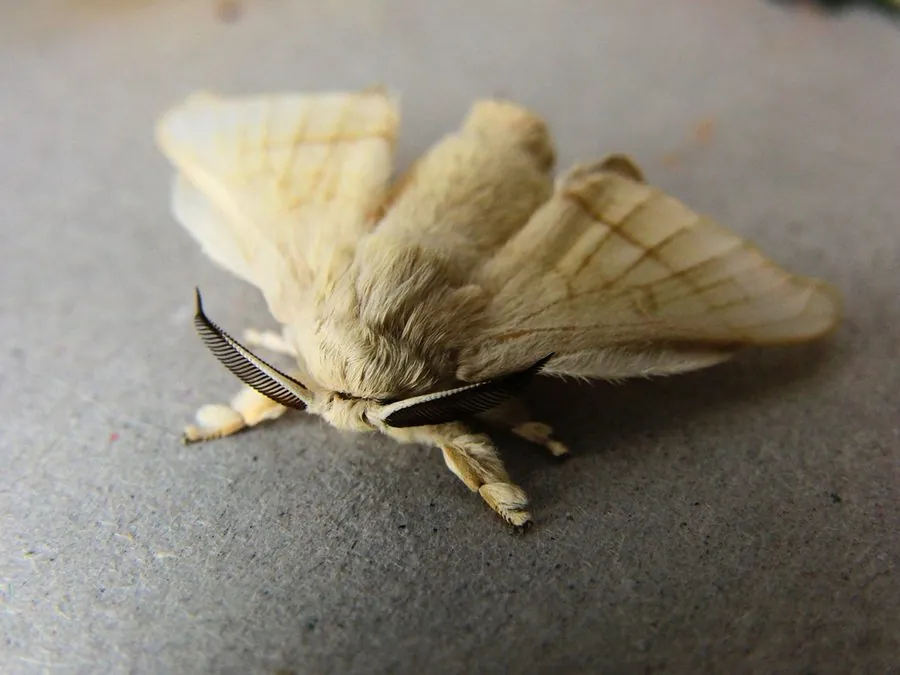

昆虫 · 动物界
家蚕 Bombyx mori

被人类驯养约五千年的吐丝昆虫，幼虫食桑叶、吐丝结茧，是丝绸产业的基石，中国是最早养蚕缫丝的国家。
- 分类
- 门节肢动物门纲昆虫纲目鳞翅目科蚕蛾科属蚕蛾属
- 栖息环境
- 人工蚕室与桑园，野生种群已不存在
- 地理分布
- 全球温带和亚热带地区人工饲养，中国为主产国
- 保护级别
- 暂无评估（长期人工驯化的家养昆虫）
物种志
家蚕幼虫初孵时体黑多毛，蜕皮后逐渐变白变胖，5 龄幼虫体长约 6–7 cm，体侧常有黑褐色斑纹。老熟幼虫吐丝结成长椭圆形茧，在茧内化蛹；成虫称蚕蛾，翅展约 4–5 cm，全身被白色鳞毛，因长期人工驯养，飞行能力已明显退化。
家蚕为完全变态昆虫，一个世代经历卵、幼虫、蛹、成虫四个阶段，幼虫共 5 龄、蜕皮 4 次，约为期 45–60 天。幼虫专食桑叶，成虫口器退化，羽化后不取食，只负责交配产卵。单根茧丝展开长度可达 700–1500 m，可缫丝织绸。家蚕在中国被驯化约五千年，如今在全球温带和亚热带地区人工饲养，中国是最大生产国；它也是完成基因组测序的重要模式昆虫，野外已不存在自维持种群。
形态与习性
- 食性幼虫专食桑叶，成虫口器退化不取食
- 体型5 龄幼虫长约 6–7 cm，茧重约 2–2.5 g
- 生活史卵—幼虫（5 龄 4 次蜕皮）—蛹—成虫，一世代约 45–60 天
- 吐丝单根茧丝展开长约 700–1500 m，可缫丝织绸
- 经济价值丝绸生产的主要原料，中国是最大生产国
- 科研完成基因组测序的模式昆虫之一
趣味知识
- 家蚕已被人类驯养约五千年，野生祖先一般认为是野桑蚕。
- 一只蚕茧的丝线展开长度可达 1000 米以上，是丝绸的原料。
- 蚕蛾羽化后口器退化，不会取食，只负责交配繁殖。